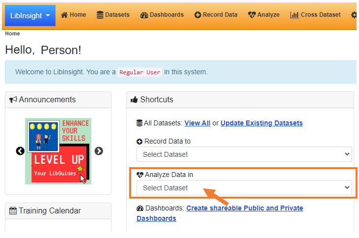

LibInsight: reports overview
UBC Library Data Team
Jeremy Buhler, Brett Dimond, Meghan Waitt
November 2022
Session content
- Tableau reports
- Analyze Data in LibInsight
- Analysis and report help
slides at https://bit.ly/libinsight-reports


To annotate in a Zoom presentation


Tableau reports with LibInsight data
Tableau reports are available for all library-wide datasets
- Patron questions
- Group presentations
- Gate counts
Reports for other LibInsight datasets can be developed upon request, in consultation with the Library Data Team
Features of Tableau reports
- Data for all locations
- Many filter options
- Variety of data displays
- Data download options
- Updated every week
Tableau tour
Tableau resources in Confluence: https://confluence.it.ubc.ca/display/ASMNT/Tableau+at+UBC+Library
Analyze data in LibInsight
Why use LibInsight instead of Tableau?
- If you prefer the format or options
- To edit or delete a record
- If there is no Tableau report
- To view very recent LibInsight entries
Analyze Data in...

LibInsight Analyze Data tour
Analysis and report help
Consult LibInsight pages in Confluence
https://confluence.it.ubc.ca/display/ASMNT/LibInsightConsult the LibInsight contacts for your branch/unit
https://confluence.it.ubc.ca/display/ASMNT/LibInsight+contactsRequest help from Library Data Team
https://helpdesk.library.ubc.ca
Library Data and Reports form